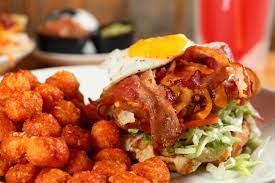
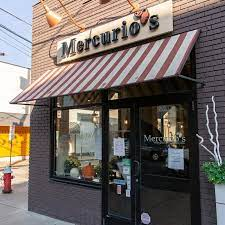

Sichuan Gourmet is a restaurant in Squirrel Hill dedicated to introducing authentic Sichuan cuisine, in both tradition and up-to-date style, to the area. Sichuan cuisine is a style of Chinese cuisine originating in the Sichuan Province of China, and is famed for bold flavors. The executive chef and the secondary chef are both from Chengdu, the capital of Sichuan province.
If you love spicy food (or even if you don't), this is a great spot to visit for an extensive menu of flavorful dishes! They even have an option for hot pot, which is great for cold days or nights to share with your friends.
Sammi's Favorite Menu Items:
Love Ramen (also called Malaxiangguo) is a restaurant in Oakland near the University of Pittsburgh that serves malaxiangguo (spicy stir-fry hot pot) and malatang (spicy numbing hot soup). Although dishes flavored with mala are often very spicy, you can specify the level of spice when paying for your bowl.
What sets this place apart is that you can choose from their set menu of noodle dishes, or make your own bowl of noodles or dry pot for which you would pay by weight (the latter is more common)! The ability to customize your bowls give you more control over what you eat, making it a great option for those who may have dietary restrictions, all while enjoying the classic flavor of mala dishes.
Sammi's Favorite Menu Items:
Took Took 98 serves authentic Thai food and tries to deliver the full Thai experience. Not only is the interior of the restaurant warmly and cutely decorated to give a comfortable dining experience, they use only locally sourced ingredients and smash their chili peppers by hand to keep the culinary process as original as possible. If you're interested in trying staple Bangkok dishes, this is the place!
Sammi's Favorite Menu Items:
Tamarind is a bright branch of a small chain and serves authentic South Indian cuisine in a two-level converted vintage house that's a relatively short walk from CMU! It's popular among students and families, making it busy at times, but it adds to the lively hearty atmosphere within the restaurant. If you enjoy Indian cuisine or are interested in trying, this is a great spot to visit.
Sammi's Favorite Menu Items:
Dagu Rice Noodle is a chain that serves hearty and fresh bowls of noodle soup! Freshly boiled soup of choice is served in a large stone bowl, and you're given the noodle and garnishes in small dishes nicely arranged on a tray that you can add in yourself.
It's perfect to warm you up on a cold day!
Sammi's Favorite Menu Items:
Oishii Bento is a spot for Korean and Japanese comfort food in Oakland! It's a popular spot for both CMU and Pitt students because of its convenient and healthy counter-serve options.
They offer bentos (lunch boxes with white rice, side dishes, and main entrees), bowl options, and udon noodle bowls!
Sammi's Favorite Menu Items:
Ktown Snack Bar is a Korean quick service restaurant located in Oakland. They offer popular Korean street food items on their menu that will satisfy your cravings at any time of day! Their menu ranges from spicy rice cakes, protein rice bowls, and desserts like Gold Fish Dessert. They also play a lot of K-Pop if you like that genre of music!
Sammi's Favorite Menu Items:
芋见BAO is a delicious Taiwanese restaurant that just opened up a new location on Craig Street right by CMU's campus! They are most known for their hand-made soup dumplings and buns, but also have an extensive menu featuring great appetizers, cold dishes, noodle soups, over-rice dishes, chef's specials, and more!
Its new location makes it an incredibly convenient spot to dine with your friends or to order takeout, but they also have another location in Oakland near the University of Pittsburgh if you're stopping by that area!
Sammi's Favorite Menu Items:
98K Hamburger serves juicy and tender chicken sandwiches and a variety of chicken combos, and are favored for their chicken thighs and dark meat cuts. This is great for a quick and easy meal, or to buy fried chicken to share with your friends. They also partner with Fantuan delivery, making it very convenient to buy for campus events.
In addition to their chicken menu, they also sell milk tea, milk shakes, sparkling drinks, and unique desserts like Milk Tea Iced Rice. If you're looking for something a little more healthy, they have salad options as well.
Sammi's Favorite Menu Items:
Teppanyaki Kyoto is a minimalist Japanese bistro featuring locally sourced teppanyaki dishes, and offers sake, wine, and beer for those who enjoy drinking. While their indoor dining area is relatively small, it gives off a warm atmosphere and serves great Japanese food!
Sammi's Favorite Menu Items:
 